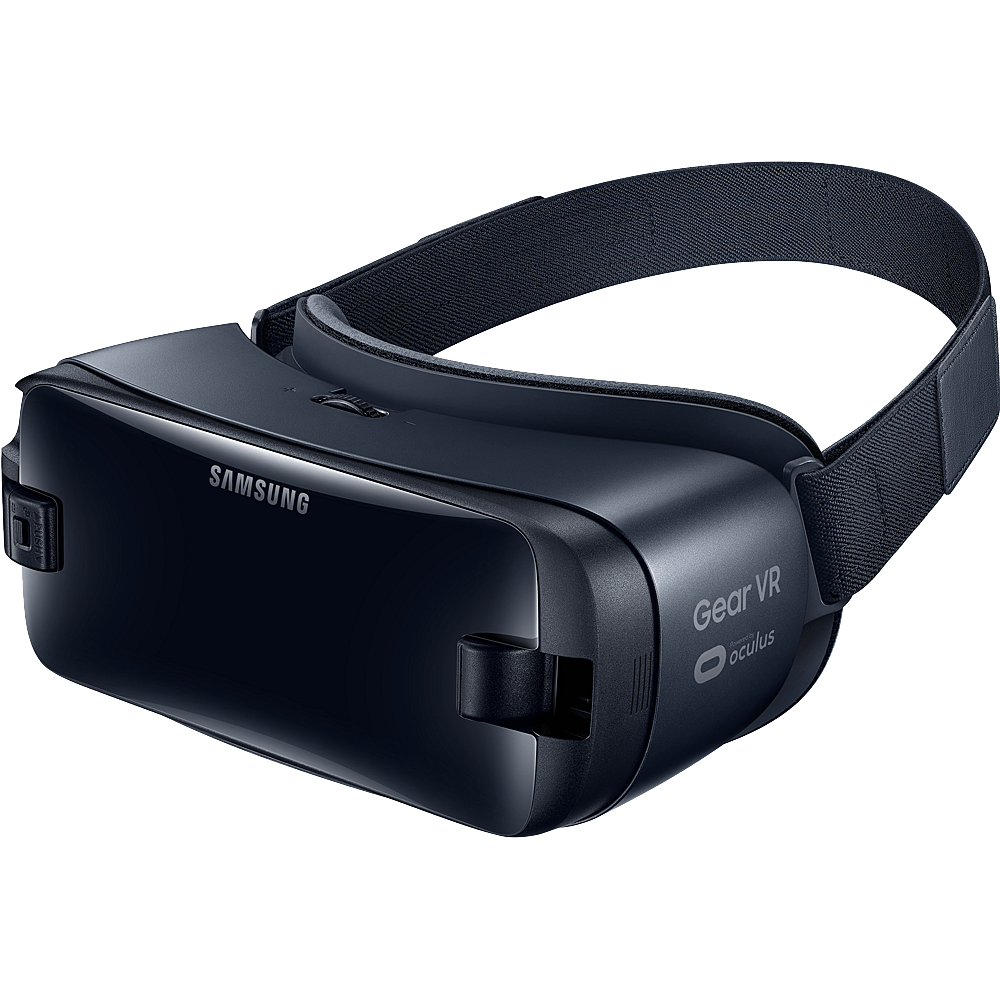
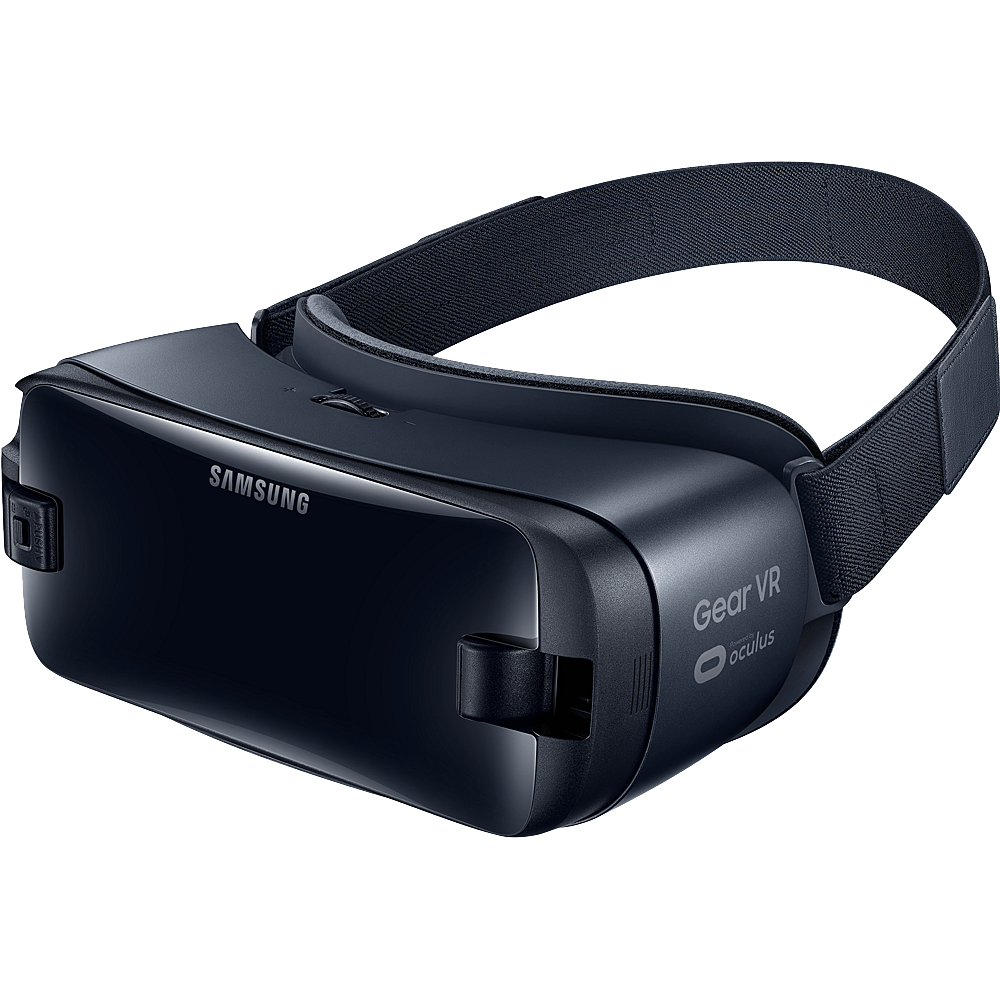

Virtual Reality Headset
The future is today.
The future is today.
The VR Headset is a cutting edge technology developed to imerse in the world of virtual reality.


Modern virtual reality headset displays are based on technology developed for smartphones including: gyroscopes and motion sensors for tracking head, body, and hand positions; small HD screens for stereoscopic displays; and small, lightweight and fast computer processors. These components led to relative affordability for independent VR developers, and lead to the 2012 Oculus Rift Kickstarter offering the first independently developed VR headset.
The Virtual Reality Modelling Language (VRML), first introduced in 1994, was intended for the development of "virtual worlds" without dependency on headsets. The Web3D consortium was subsequently founded in 1997 for the development of industry standards for web-based 3D graphics. The consortium subsequently developed X3D from the VRML framework as an archival, open-source standard for web-based distribution of VR content. WebVR is an experimental JavaScript application programming interface (API) that provides support for various virtual reality devices, such as the HTC Vive, Oculus Rift, Google Cardboard or OSVR, in a web browser.
 


Get it now!
$599.00